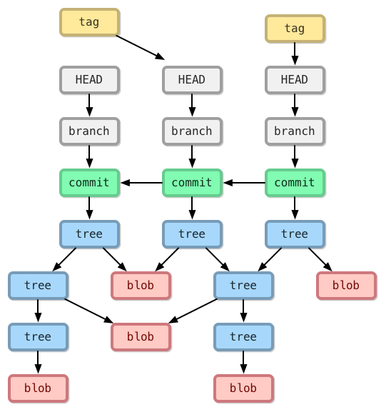

git:深入理解git结构与概念
前言
因计划每月必须写一篇博客。然而2月份没写。
概念
HEAD 物件: 类似C语言的指针，指向commit，每个head有个名字（branch 名或者 tag名等）。每个仓库默认有个head叫master。一个仓库可以含有任意数量的head。在同一时间只有一个被选中的head叫做当前head。当前head用HEAD(大写)表示。如果指向的不是最新的commit，此head为分离的head。在git文档中，head（小写）可以代表任何的head，HEAD（大写）代表当前head。
A head is simply a reference to a commit object. Each head has a name (branch name or tag name, etc). By default, there is a head in every repository called master. A repository can contain any number of heads. At any given time, one head is selected as the “current head.” This head is aliased to HEAD, always in capitals”.
Note this difference: a “head” (lowercase) refers to any one of the named heads in the repository; “HEAD” (uppercase) refers exclusively to the currently active head. This distinction is used frequently in Git documentationblob 物件：就是工作目录中某个档案的”内容”，且只有内容而已，当你执行git add 指令的同时，这些新增档案的内容就会立刻被写入成为blob 物件，档名则是物件内容的杂凑运算结果，没有任何其他其他信息，像是档案时间、原本的档名或档案的其他资讯，都会储存在其他类型的物件里(也就是tree 物件)。
- tree 物件：这类物件会储存特定目录下的所有信息，包含该目录下的档名、对应的 blob 物件名称、档案连结(symbolic link) 或其他 tree 物件等等。由于 tree 物件可以包含其他 tree 物件，所以浏览 tree 物件的方式其实就跟档案系统中的 “资料夹” 没两样。简单来说，tree 物件这就是在特定版本下某个资料夹的快照(Snapshot)。
- commit 物件：用来记录有那些tree 物件包含在版本中，一个commit 物件代表着Git 的一次提交，记录着特定提交版本有哪些tree 物件、以及版本提交的时间、纪录讯息等等，通常还会记录上一层的commit 物件名称(只有第一次commit 的版本没有上层commit 物件名称。
- tag 物件：是一个容器，通常用来关联特定一个 commit 物件 (也可以关联到特定 blob、tree 物件)，并额外储存一些额外的参考信息(metadata)，例如: tag 名称。使用 tag 物件最常见的情况是替特定一个版本的 commit 物件标示一个易懂的名称，可能是代表某个特定发行的版本，或是拥有某个特殊意义的版本。
Git 会将每一个版本中的档案建立一个对应的blob 物件，一样的，该blob 物件的档名就是用上述的方式计算出来的，从这些blob 档案，你看不出跟版本有任何关系，你必须透过tree 物件(资料夹的快照) 与commit 物件(每一个版本的快照) 才能关联出这些blob 与版本的关系。
结构
物件之间的关系：

相关操作在结构中图解

文件状态变更与命令的关系

透过指令改变文件的生命周期（状态），事实上，这些改变的过程，都是在更新 ”索引档”的过程。
引用
https://stackoverflow.com/questions/2304087/what-is-head-in-git